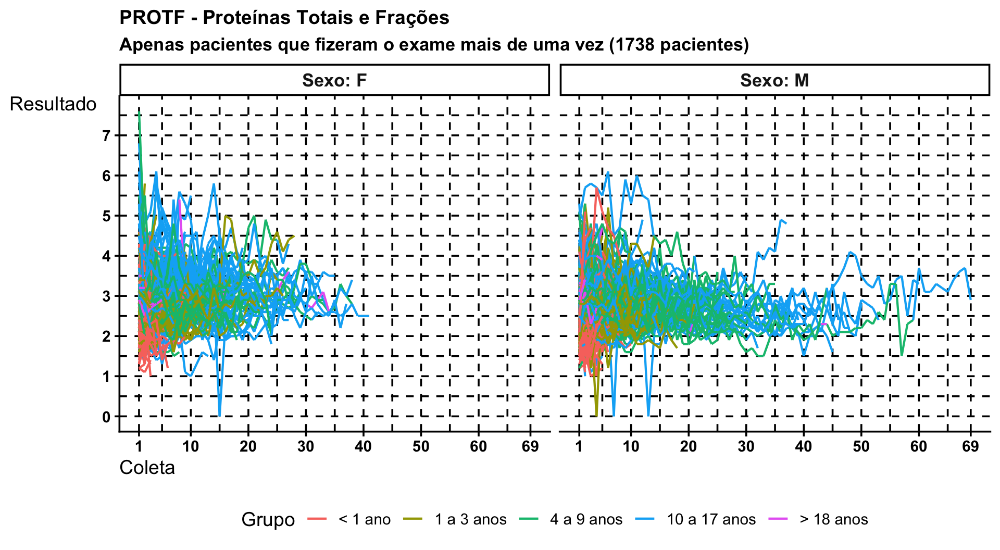
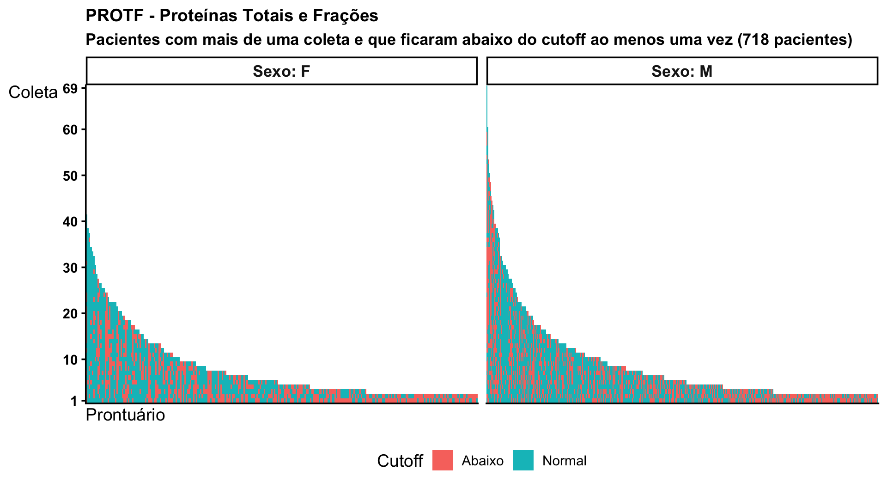
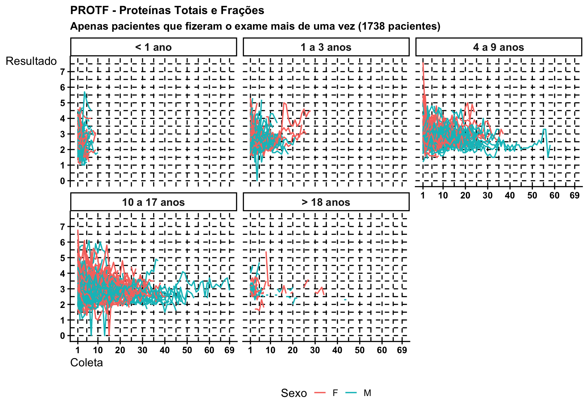
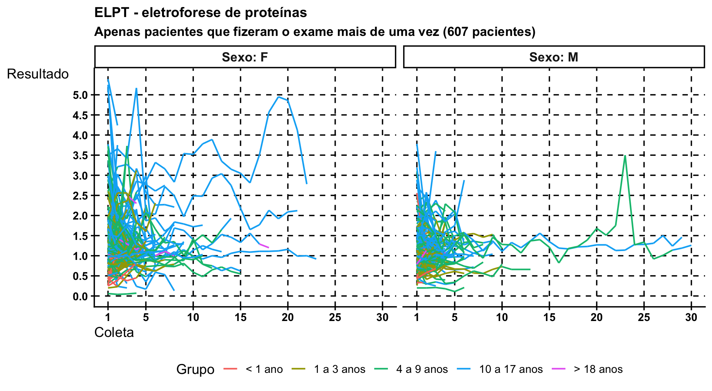
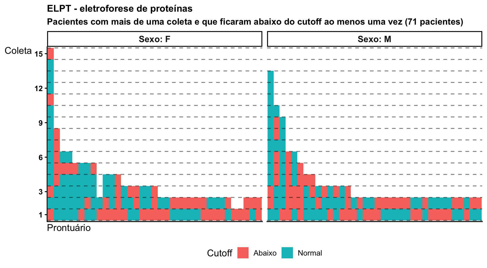
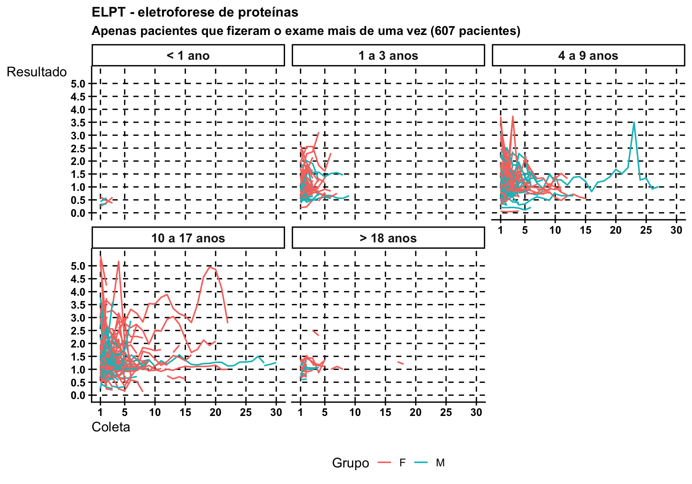

Min. 1st Qu. Median
"1929-10-09 00:00:00" "2006-01-11 00:00:00" "2011-01-08 00:00:00"
Mean 3rd Qu. Max.
"2010-09-18 18:19:13" "2015-08-20 00:00:00" "2024-10-25 00:00:00"
E das datas de coleta:
Code
summary(protf$DC)
Min. 1st Qu. Median
"2015-01-02 00:00:00" "2016-11-20 00:00:00" "2019-03-28 00:00:00"
Mean 3rd Qu. Max.
"2019-05-31 02:00:12" "2021-10-02 00:00:00" "2024-10-31 00:00:00"
Idade:
Code
summary(protf$IDADE)
Min. 1st Qu. Median Mean 3rd Qu. Max.
-0.263 3.514 8.559 8.696 13.156 88.575
Resultados:
Code
summary(protf$RESULTADO)
Min. 1st Qu. Median Mean 3rd Qu. Max.
0.000 2.400 2.700 2.784 3.100 8.000
Para cada grupo temos sua nota de corte, e assim mostramos quantos exames (E) estão abaixo (ABA) de tal cutoff e de quantos pacientes (P) diferentes geram esses exames (junto temos a média de exames por paciente).
protf_ids <- protf |> dplyr::count(PRONTUARIO) |> dplyr::arrange(dplyr::desc(n)) |> dplyr::filter(n >1) |> dplyr::pull(PRONTUARIO)protf |> dplyr::filter(PRONTUARIO %in% protf_ids) |> dplyr::select(c(PRONTUARIO, SEXO, DC, GRUPO, RESULTADO)) |> dplyr::arrange(PRONTUARIO, DC) |> dplyr::group_by(PRONTUARIO, SEXO) |> dplyr::mutate(COLETA = dplyr::row_number()) |> dplyr::ungroup() |>ggplot() +aes(x = COLETA, y = RESULTADO, group = PRONTUARIO, color = GRUPO) +geom_vline(xintercept =c(1, seq(from =5, to =65, by =5), 69),linetype ="dashed" ) +geom_hline(yintercept =seq(from =0, to =7.5, by =0.5),linetype ="dashed" ) +geom_line(linewidth =0.75) +facet_wrap(~ SEXO,labeller = ggplot2::labeller(SEXO = \(x) paste("Sexo:", x)) ) +scale_x_continuous(breaks =c(1, seq(from =10, to =60, by =10), 69) ) +scale_y_continuous(breaks =seq(from =0, to =8, by =1)) +labs(x ="Coleta", y ="Resultado", color ="Grupo", title ="PROTF - Proteínas Totais e Frações",subtitle =paste("Apenas pacientes que fizeram o exame mais de uma vez", "(1738 pacientes)" ) ) +theme(legend.position ="bottom")

Code
protf_ids_var <- protf |> dplyr::filter(PRONTUARIO %in% protf_ids) |> dplyr::arrange(PRONTUARIO, DC) |> dplyr::count(PRONTUARIO, VALOR) |> tidyr::pivot_wider(values_from = n, names_from = VALOR, values_fill =0) |> dplyr::filter(! Abaixo ==0) |> dplyr::pull(PRONTUARIO)protf_ids_sort <- protf |> dplyr::filter(PRONTUARIO %in% protf_ids_var) |> dplyr::count(PRONTUARIO) |> dplyr::arrange(dplyr::desc(n)) |> dplyr::pull(PRONTUARIO)protf |> dplyr::filter(PRONTUARIO %in% protf_ids_var) |> dplyr::arrange(PRONTUARIO, DC) |> dplyr::select(PRONTUARIO, SEXO, VALOR) |> dplyr::mutate(PRONTUARIO =factor(PRONTUARIO, levels = protf_ids_sort)) |> dplyr::group_by(PRONTUARIO, SEXO) |> dplyr::mutate(COLETA = dplyr::row_number() |>as.factor()) |> dplyr::ungroup() |>ggplot() +aes(x = PRONTUARIO, y = COLETA, fill = VALOR) +geom_tile() +# geom_vline(# xintercept = seq(70) - 0.5,# linetype = "dashed", alpha = 0.5# ) +facet_wrap(~ SEXO,scales ="free_x",labeller = ggplot2::labeller(SEXO = \(x) paste("Sexo:", x)) ) +scale_x_discrete(labels =NULL, breaks =NULL) +scale_y_discrete(breaks =c("1", "10", "20", "30", "40", "50", "60", "69") ) +labs(x ="Prontuário", y ="Coleta", fill ="Cutoff",title ="PROTF - Proteínas Totais e Frações",subtitle =paste("Pacientes com mais de uma coleta e que ficaram abaixo do cutoff ao","menos uma vez (718 pacientes)" ) ) +theme(legend.position ="bottom")

Acima, cada linha vertical é um paciente. Se ela muda de cor significa que houve variação em termos de abaixo ou não do cutoff do momento (com base na idade).
Abaixo, a mesma informação dos dois gráficos acima mas vistos de uma maneira alternativa.
Code
protf |> dplyr::filter(PRONTUARIO %in% protf_ids) |> dplyr::select(c(PRONTUARIO, SEXO, DC, GRUPO, RESULTADO)) |> dplyr::arrange(PRONTUARIO, DC) |> dplyr::group_by(PRONTUARIO, SEXO) |> dplyr::mutate(COLETA = dplyr::row_number()) |> dplyr::ungroup() |>ggplot() +aes(x = COLETA, y = RESULTADO, group = PRONTUARIO, color = SEXO) +geom_vline(xintercept =c(1, seq(from =5, to =65, by =5), 69),linetype ="dashed" ) +geom_hline(yintercept =seq(from =0, to =7.5, by =0.5),linetype ="dashed" ) +geom_line(linewidth =0.75) +facet_wrap(~ GRUPO) +scale_x_continuous(breaks =c(1, seq(from =10, to =60, by =10), 69) ) +scale_y_continuous(breaks =seq(from =0, to =8, by =1)) +labs(x ="Coleta", y ="Resultado", color ="Sexo", title ="PROTF - Proteínas Totais e Frações",subtitle =paste("Apenas pacientes que fizeram o exame mais de uma vez", "(1738 pacientes)" ) ) +theme(legend.position ="bottom")

Code
protf |> dplyr::filter(PRONTUARIO %in% protf_ids_var) |> dplyr::arrange(PRONTUARIO, DC) |> dplyr::select(PRONTUARIO, SEXO, VALOR) |> dplyr::mutate(PRONTUARIO =factor(PRONTUARIO, levels = protf_ids_sort)) |> dplyr::group_by(PRONTUARIO, SEXO) |> dplyr::mutate(COLETA = dplyr::row_number() |>as.factor()) |> dplyr::ungroup() |>ggplot() +aes(y = PRONTUARIO, x = COLETA, fill = VALOR) +geom_tile() +# geom_vline(# xintercept = seq(70) - 0.5,# linetype = "dashed", alpha = 0.5# ) +facet_wrap(~ SEXO,scales ="free_y",labeller = ggplot2::labeller(SEXO = \(x) paste("Sexo:", x)) ) +scale_y_discrete(labels =NULL, breaks =NULL) +scale_x_discrete(breaks =c("1", "10", "20", "30", "40", "50", "60", "69") ) +labs(y ="Prontuário", x ="Coleta", fill ="Cutoff",title ="PROTF - Proteínas Totais e Frações",subtitle =paste("Pacientes com mais de uma coleta e que ficaram abaixo do cutoff ao","menos uma vez (718 pacientes)" ) ) +theme(legend.position ="bottom")
Min. 1st Qu. Median Mean 3rd Qu. Max.
0.040 0.790 1.010 1.104 1.280 5.900
Medidas resumo das datas de nascimento:
Code
summary(elpt$DN)
Min. 1st Qu. Median
"1935-02-19 00:00:00" "2006-08-17 00:00:00" "2011-05-04 00:00:00"
Mean 3rd Qu. Max.
"2010-10-05 10:39:45" "2016-01-27 06:00:00" "2024-07-22 00:00:00"
E das datas de coleta:
Code
summary(elpt$DC)
Min. 1st Qu. Median
"2015-01-06 00:00:00" "2018-04-08 00:00:00" "2021-02-17 00:00:00"
Mean 3rd Qu. Max.
"2020-09-16 21:32:57" "2023-04-17 00:00:00" "2024-10-31 00:00:00"
Idade:
Code
summary(elpt$IDADE)
Min. 1st Qu. Median Mean 3rd Qu. Max.
0.02466 4.32329 9.36525 9.95062 13.68699 89.63388
Para cada grupo temos sua nota de corte, e assim mostramos quantos exames (E) estão abaixo (ABA) de tal cutoff e de quantos pacientes (P) diferentes geram esses exames (junto temos a média de exames por paciente).
elpt_ids <- elpt |> dplyr::count(PRONTUARIO) |> dplyr::arrange(dplyr::desc(n)) |> dplyr::filter(n >1) |> dplyr::pull(PRONTUARIO)elpt |> dplyr::filter(PRONTUARIO %in% elpt_ids) |> dplyr::select(c(PRONTUARIO, SEXO, DC, GRUPO, RESULTADO)) |> dplyr::arrange(PRONTUARIO, DC) |> dplyr::group_by(PRONTUARIO, SEXO) |> dplyr::mutate(COLETA = dplyr::row_number()) |> dplyr::ungroup() |>ggplot() +aes(x = COLETA, y = RESULTADO, group = PRONTUARIO, color = GRUPO) +geom_vline(xintercept =c(1, seq(from =5, to =30, by =5)),linetype ="dashed" ) +geom_hline(yintercept =seq(from =0, to =5, by =0.5),linetype ="dashed" ) +geom_line(linewidth =0.75) +facet_wrap(~ SEXO,labeller = ggplot2::labeller(SEXO = \(x) paste("Sexo:", x)) ) +scale_x_continuous(breaks =c(1, seq(from =5, to =30, by =5)) ) +scale_y_continuous(breaks =seq(from =0, to =5, by =0.5)) +labs(x ="Coleta", y ="Resultado", color ="Grupo", title ="ELPT - eletroforese de proteínas",subtitle =paste("Apenas pacientes que fizeram o exame mais de uma vez", "(607 pacientes)" ) ) +theme(legend.position ="bottom")

Abaixo, cada linha vertical é um paciente. Se ela muda de cor significa que houve variação em termos de abaixo ou não do cutoff do momento (com base na idade).
Code
elpt_ids_var <- elpt |> dplyr::filter(PRONTUARIO %in% elpt_ids) |> dplyr::arrange(PRONTUARIO, DC) |> dplyr::count(PRONTUARIO, VALOR) |> tidyr::drop_na() |> tidyr::pivot_wider(values_from = n, names_from = VALOR, values_fill =0) |> dplyr::filter(! Abaixo ==0) |> dplyr::pull(PRONTUARIO)elpt_ids_sort <- elpt |> dplyr::filter(PRONTUARIO %in% elpt_ids_var) |> dplyr::count(PRONTUARIO) |> dplyr::arrange(dplyr::desc(n)) |> dplyr::pull(PRONTUARIO)elpt |> dplyr::filter(PRONTUARIO %in% elpt_ids_var) |> tidyr::drop_na() |> dplyr::arrange(PRONTUARIO, DC) |> dplyr::select(PRONTUARIO, SEXO, VALOR) |> dplyr::mutate(PRONTUARIO =factor(PRONTUARIO, levels = elpt_ids_sort)) |> dplyr::group_by(PRONTUARIO, SEXO) |> dplyr::mutate(COLETA = dplyr::row_number() |>as.factor()) |> dplyr::ungroup() |>ggplot() +aes(x = PRONTUARIO, y = COLETA, fill = VALOR) +geom_tile() +geom_hline(yintercept =seq(16) -0.5,linetype ="dashed", alpha =0.5 ) +facet_wrap(~ SEXO,scales ="free_x",labeller = ggplot2::labeller(SEXO = \(x) paste("Sexo:", x)) ) +scale_x_discrete(labels =NULL, breaks =NULL) +scale_y_discrete(breaks =c("1", "3", "6", "9", "12", "15")) +labs(x ="Prontuário", y ="Coleta", fill ="Cutoff",title ="ELPT - eletroforese de proteínas",subtitle =paste("Pacientes com mais de uma coleta e que ficaram abaixo do cutoff ao","menos uma vez (71 pacientes)" ) ) +theme(legend.position ="bottom")

Abaixo, a mesma informação dos dois gráficos acima mas vistos de uma maneira alternativa.
Code
elpt |> dplyr::filter(PRONTUARIO %in% elpt_ids) |> dplyr::select(c(PRONTUARIO, SEXO, DC, GRUPO, RESULTADO)) |> dplyr::arrange(PRONTUARIO, DC) |> dplyr::group_by(PRONTUARIO, SEXO) |> dplyr::mutate(COLETA = dplyr::row_number()) |> dplyr::ungroup() |>ggplot() +aes(x = COLETA, y = RESULTADO, group = PRONTUARIO, color = SEXO) +geom_vline(xintercept =c(1, seq(from =5, to =30, by =5)),linetype ="dashed" ) +geom_hline(yintercept =seq(from =0, to =5, by =0.5),linetype ="dashed" ) +geom_line(linewidth =0.75) +facet_wrap(~ GRUPO) +scale_x_continuous(breaks =c(1, seq(from =5, to =30, by =5))) +scale_y_continuous(breaks =seq(from =0, to =5, by =0.5)) +labs(x ="Coleta", y ="Resultado", color ="Grupo", title ="ELPT - eletroforese de proteínas",subtitle =paste("Apenas pacientes que fizeram o exame mais de uma vez", "(607 pacientes)" ) ) +theme(legend.position ="bottom")

Code
elpt |> dplyr::filter(PRONTUARIO %in% elpt_ids_var) |> tidyr::drop_na() |> dplyr::arrange(PRONTUARIO, DC) |> dplyr::select(PRONTUARIO, SEXO, VALOR) |> dplyr::mutate(PRONTUARIO =factor(PRONTUARIO, levels = elpt_ids_sort)) |> dplyr::group_by(PRONTUARIO, SEXO) |> dplyr::mutate(COLETA = dplyr::row_number() |>as.factor()) |> dplyr::ungroup() |>ggplot() +aes(y = PRONTUARIO, x = COLETA, fill = VALOR) +geom_tile() +geom_vline(xintercept =seq(16) -0.5,linetype ="dashed", alpha =0.5 ) +facet_wrap(~ SEXO,scales ="free_y",labeller = ggplot2::labeller(SEXO = \(x) paste("Sexo:", x)) ) +scale_y_discrete(labels =NULL, breaks =NULL) +scale_x_discrete(breaks =c("1", "3", "6", "9", "12", "15")) +labs(y ="Prontuário", x ="Coleta", fill ="Cutoff",title ="ELPT - eletroforese de proteínas",subtitle =paste("Pacientes com mais de uma coleta e que ficaram abaixo do cutoff ao","menos uma vez (71 pacientes)" ) ) +theme(legend.position ="bottom")
All analyses were conducted using the R language and environment for statistical computing (R Core Team, 2025). The primary packages employed were ggplot2 (Wickham, 2016), dplyr (Wickham et al., 2023), lubridate (Grolemund & Wickham, 2011), and tidyr (Wickham et al., 2024).
Up to the present stage, we have focused on data cleaning, data manipulation, and data visualization, involving the creation of features, generation of frequency tables, calculation of averages and descriptive statistics, graphical representations, and construction of tabular summaries from various perspectives.
In the next steps, we plan to apply generalized linear models (GLMs - McCullagh & Nelder, 1989) and generalized additive models (GAMs - Hastie & Tibshirani, 1990; Wood, 2017) - and, if necessary, their mixed-effects (Gelman & Hill, 2007) variants - to account for latent effects. The aim is to identify and quantify associations between the values of calculated globulin, gamma fraction, and immunoglobulin. We also intend to employ similar methodologies to describe and understand the clinical and epidemiological profiles present in the data.
Once the dataset in fully prepared, and if the necessary, we also plan to implement machine learning algorithms for classification and or forecasting purposes (James et al., 2021), while reserving the statistical models primarily for inference. Defining new cutoff points in contexts where they are still unknown - or validating existing ones - is also a goal. For this, both statistical and machine learning methods will be considered.
R Core Team (2025). R: A Language and Environment for Statistical Computing. R Foundation for Statistical Computing, Vienna, Austria. https://www.R-project.org/.
H. Wickham. ggplot2: Elegant Graphics for Data Analysis. Springer-Verlag New York, 2016.
Wickham H, François R, Henry L, Müller K, Vaughan D (2023). dplyr: A Grammar of Data Manipulation. R package version 1.1.4, https://CRAN.R-project.org/package=dplyr.
Garrett Grolemund, Hadley Wickham (2011). Dates and Times Made Easy with lubridate. Journal of Statistical Software, 40(3), 1-25. URL https://www.jstatsoft.org/v40/i03/.